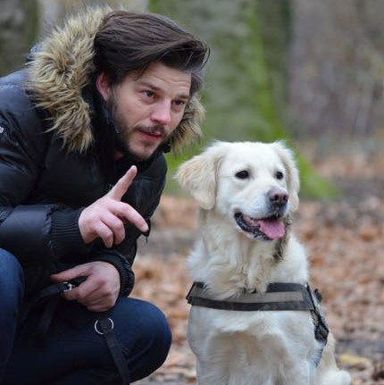

Relevant topics

Increasing the bonding with your dog
Socialize her with people and dogs, but always look out for her wellbeing. By being a caring, vigilant
mentor, you'll build her trust and confidence and raise her opinion of you. Groom and pet her regularly
to desensitize her to touch and to build up her desire for physical affection.
Read more